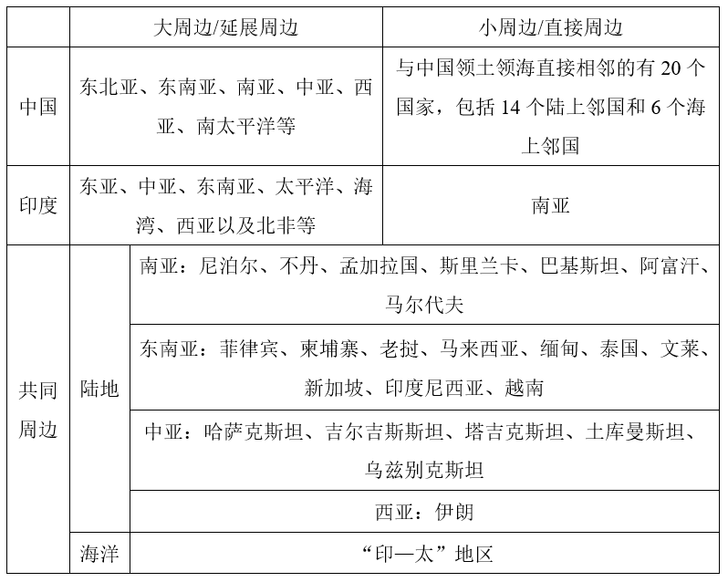

收录于合集

**从“共同周边”到“竞争周边” ******
——俄欧在共同周边的互动教训对中印的启示
作者： 卢光盛，云南大学“一带一路”研究院、云南大学国际关系研究院院长、教授、博士生导师，云南大学周边外交研究中心主任；聂姣，云南大学国际关系研究院国际关系专业2019级博士生、云南大学—伦敦大学亚非学院联合培养博士生。
来源： 《南亚研究》2022年第1期
摘要
一段时间以来，中印在周边地区的互动出现从“共同周边”向“竞争周边”发展的趋势。对于当下处在十字路口的中印关系而言，从国际案例的历史镜鉴中汲取智慧，启发当下的中印关系，不失为一条可行的出路。以2014年乌克兰危机爆发为标志，俄欧在共同周边的互动呈现出“竞争”甚至是“冲突”的消极态势。究其根源，大国权力的对称性、行为体认知的差异程度、大国周边战略的兼容性是影响俄欧在共同周边互动的三个重要变量。中印在共同周边的互动同样如此。中印应吸取俄欧的教训，未来可通过增强经贸互惠应对不对称、依托现有机制和战略对接来增强中印周边战略的兼容性、从中印传统文化中吸取精髓和相通之处来引导共同周边的规范建设等， 共建一个稳定和谐、不被“利用”、走向“竞合”的周边 。
大国在共同周边的互动是影响大国间关系和大国周边外交的重要因素。自2014年乌克兰危机以来，在对待共同周边问题上的分歧使得俄欧关系进入了竞争冲突为主的时期。与俄欧在东欧和高加索地区从“共同周边”到“竞争周边”的互动相类似，中印在共同周边的互动也正在向“竞争周边”发展。作为在同一时代、同一地区、同时崛起的两个最大发展中国家，中印在共同周边地区的互动牵动着地区乃至世界秩序的发展。 本文通过分析俄欧在东欧和高加索地区从“共同周边”到“竞争周边”的互动过程及经验教训，启示中印在共同周边的互动关系，从周边做起推动中印关系回到正轨 。
01
问题的提出与文献回顾
共同周边已经成为中印两国重要的地缘战略区。中印两国都将周边地区作为其崛起的首要依托，并将周边外交放在各自外交战略的优先位置。然而，中印两国同时崛起又相互毗邻的地缘现实，使两国在国家核心利益交汇区——共同周边地区的利益碰撞与秩序之争似乎难以避免。结合近年来中印关系的发展，共同周边地区不仅是中印互动的舞台，更是影响中印关系的一个重要变量。
共同周边（Common Neighborhood）是指如果某一地区同时是两个及以上大国的周边地区，那么该地区就构成了诸大国的共同周边，也有学者称之为共享周边（Shared Neighbourhood）， 或重叠周边（Overlapping Neighbourhoods） 。从广义来看，由于中印两国在地区层面的“地缘战略呈现陆海交叠的基本态势” ，这种海陆交叠区，就可看成是中印的共同周边。其中陆地的共同周边主要是东南亚、南亚、中亚和西亚地区，海洋的共同周边是印度洋和太平洋。因此，广义的中印共同周边主要是指东南亚、南亚、中亚、西亚、印度洋和太平洋六个地区。从国别来看，以中印边界东北—西南方向为轴线的哈萨克斯坦、吉尔吉斯斯坦、塔吉克斯坦、土库曼斯坦、乌兹别克斯坦、尼泊尔、不丹、孟加拉国、斯里兰卡、巴基斯坦、伊朗、阿富汗、菲律宾、柬埔寨、老挝、马来西亚、缅甸、泰国、文莱、新加坡、印度尼西亚、越南等为中印的共同周边国家。需要指出的是，本文“共同周边”的周边概念并不限于严格意义上的地理毗邻国家，更倾向于中印两国周边概念界定中的“大周边”里重合交叠的国家（见表1）。
表-1 中印共同周边国家

同时崛起的两个毗邻大国如何稳定相处一直是国际关系研究的大课题，但自古至今的成功案例太少。尽管学界最近对共同周边越来越感兴趣，但“大国在共同周边地区的互动”这一主题在很大程度上仍未得到充分研究。现有研究成果主要集中讨论以下几组大国在共同周边地区的互动：欧盟与俄罗斯在东欧和南高加索地区的互动、欧盟与中东大国在地中海南部和东部的互动、美国与巴西在拉丁美洲的互动。既有的这几组来自不同大洲的不同大国在共同周边互动的案例研究为本文提供了丰富的文献积累。可以发现，现有研究主要是国外学者的研究，国内学者对“大国在共同周边地区的互动”这一主题的关注还较少，而聚焦到中印在共同周边互动的研究成果更是少之又少，部分学者在研究中印关系时提到了“中印在南亚和印度洋区域的战略竞争”。
本文选取俄欧在东欧和高加索地区的互动这个案例来分析大国在共同周边地区的互动模式，以期对中印在共同周边地区的互动提供镜鉴。 俄欧的共同周边主要是指从白俄罗斯一直延伸到高加索和里海的广阔地理区域，从国别来看，主要包括东欧的白俄罗斯、乌克兰、摩尔多瓦三国和高加索地区的亚美尼亚、阿塞拜疆、格鲁吉亚三国。冷战结束以来，俄欧在东欧与高加索地区的互动经历从“共同周边”到“竞争周边”的历程。由于重叠的区域一体化的不相容所引发的政治、经济和社会冲突，已经成为东欧几个世纪以来的历史标志。这一古老冲突的当前版本是俄欧在该地区推出的各种一体化倡议，如欧盟邻国政策（ENP） 和俄罗斯的欧亚经济联盟（EAEU）由于区域合作重叠所衍生出冲突。以2014年乌克兰危机爆发为标志，俄欧在东欧和高加索地区的互动呈现出“竞争”甚至是“冲突”的消极态势。与俄欧一样，近期中印在共同周边的互动也有向“竞争周边”发展的趋势。俄欧在东欧和高加索地区从“共同周边”走向“竞争周边”的互动教训对中印来说是值得警惕的。
选择俄欧在东欧和高加索地区的互动为案例，主要是因为这个案例与中印在共同周边的互动有诸多相似之处。其一， 俄欧、中印都针对共同周边地区提出了各自的地区倡议 ，俄欧以“东部伙伴关系”（EaP）和欧亚经济联盟，中印以“一带一路”倡议和“印太战略”、“东向行动政策”、“邻国优先”政策等为代表，这些倡议之间一定程度上形成了相互竞争的态势。其二， 在两组互动中，印度与俄罗斯一样，基于历史包袱具有恢复地区霸权的思想 。东欧是俄罗斯的传统势力范围，俄罗斯一直在苏联地区贯彻重建“帝国”的连贯战略，整合后苏联空间一直是俄罗斯外交政策的重点；南亚也被印度视为传统势力范围，对共同周边国家具有明显的“后院”心态。其三， 从域外国家的介入来看，美国在这两组大国互动中都扮演着极为重要的角色 。美国重塑跨大西洋伙伴关系的计划，可能会成为俄欧关系的“新结”，而美国主导下的“印太战略”也成为增加中印在周边互动不确定性和复杂性的重要原因。当然，中印在共同周边的互动具有其特殊性，最大的特殊之处在于两国共同崛起且互为强邻。正如印度外长苏杰生所言，中印平行崛起，是人类历史绝无仅有事件。另外，在可预见的将来，欧盟很难接受俄罗斯，但是中国对印度显示出更多的包容和尊重。
共同周边必然意味着中印在周边地区具有利益交汇，这种利益交叉点也成为中印在共同周边地区进行战略协作与外交互动的重要因素。中印共建一个稳定和谐、不被“利用”、走向“竞合”的周边符合两国的共同利益，中印必须为更持久的多双边对话铺平道路，以减轻一些不确定性引发的竞争和不信任。也就是说，中印需要在共同周边进行战略对话，以协调双方的区域互联互通愿景和政策。如果中印未能开展这样的对话，未能就中印的周边政策达成共识框架，将导致地区不稳定和代价高昂的“零和”竞争甚至“负和”冲突。在快速变化的国际环境中，这对中印而言代价未免太大。
对中印的共同周边国家而言，“大象打架，草地遭殃”是对中印竞争对其造成消极影响的最生动描述。如果与俄欧在东欧和高加索地区的互动一样，共同周边地区演变为中印两个大国战略竞争的舞台，即从“共同周边”演化为“竞争周边”甚至是“冲突周边”，都将损害到共同周边国家的利益。不过，从积极影响来看，中印在共同周边地区的竞争给了共同周边小国通过左右逢源获得利益的新机会，使这些国家能够不受中印两国偏好的影响更加独立地采取行动。
随着崛起过程中综合实力的增强，中印两国必然会对周边区域产生更大的利益诉求，而中印互为对较广阔的周边区域拥有共同关切及活动空间的邻国，又同是地区性大国，现在和未来必然在周边存在相互竞合与相互合作的双重叠加关系。基于此，本文主要讨论以下几个问题：中印在共同周边地区产生了哪种形式的互动？哪些因素使目前中印在共同周边的互动走向“竞争”模式？这种模式对共同周边国家产生了什么影响？中印应该做些什么来确保在共同周边的互动向更积极的“竞合”模式转变，或至少不滑向彻底的“冲突”模式？ 本文通过分析俄欧在东欧和高加索地区从“共同周边”到“竞争周边”的互动过程及经验教训，对应中印在周边地区的互动从“共同周边”日益走向“竞争周边”的当前状态，用俄欧案例镜鉴和启示中印在共同周边的互动，并探索未来中印在共同周边地区如何从“竞争”走向“竞合”或者至少避免走向“冲突”的路径。
02
大国在共同周边地区的互动模式
大国在共同周边的互动具有四种不同的类型——共存、合作、竞争、冲突（见表2）。一定程度上，这四种类型也可以概括国家间关系的各种维度。
（一）大国在共同周边地区互动模式的类型
第一，“共存”模式。 “共存”模式是指两个大国基于相互忽视或无知的、中立的互动，甚至根本没有互动，伴随着一种不干涉周边国家的做法。在这种情况下，邻国也可能有意或无意地充当了这两个大国之间的缓冲区。“共存”模式最典型的案例是巴西和美国在拉丁美洲的互动。拉丁美洲是美国的传统后院，美国向来将其视为自己的势力范围，不愿看到西半球南部出现一个挑战其霸权、与之平起平坐的南美共同体，这决定了美国对巴西在南美地区主义的主导国角色设定了一个限度，一旦巴西超越了这个限度，以区域政治“平衡手”自居的美国必然要进行干预。实力不对称意味着美国比巴西更具资源优势，而巴西又比其邻国更有优势，这也合理解释了为什么巴西在该地区的行为在很大程度上取决于美国，只有在美国漠不关心或不注意的时候，巴西才可以充当地区领袖。但由于这种案例对中印不具有参考性，再加上巴西和美国自身并非邻国，下文不多做介绍。
第二，“合作”模式。 “合作”模式指两个大国在共同周边持有友好的认知，这种模式的特征是两个大国之间的“正和博弈”，并遵循睦邻友好，有时甚至是共同领导的原则。在稳定的“合作”模式下，大国的周边政策主要集中于区域合作或联盟建设。合作是为了达到“互惠”和“双赢”的共同目的，彼此相互协调、相互配合的一种联合行动，是一种最佳的战略性互动方式。这个模式的典型案例是当下俄罗斯和中国在中亚形成的“合作”互动模式，以“一带一盟”对接合作为标志。
第三，“竞争”模式。 “竞争”模式指两个大国在共同周边地区持“非敌非友”的认知，其中一方或相互视对方为威胁或竞争对手。在竞争模式下，受新现实主义启发的“零和博弈”会导致大国之间的“竞争”，它源于两个大国都希望在邻国发挥领导作用，进而相互之间持有警惕乃至敌对的心理。这种模式的案例是2014年乌克兰危机爆发前俄欧在东欧和高加索地区的互动，以及当下中印在共同周边的互动。
第四，“冲突”模式。 “冲突”模式指两个大国在共同周边地区都持敌意的认知，互动双方处于完全紧张和对抗的状态，一方取得相对优势意味着另一方的绝对利益受损。这时竞争模式的“零和博弈”已经演变成“负和博弈”，导致大国之间可能会出现暴力的“冲突”行动。相比之下，如果一个大国的目标是防止另一个大国占据主导地位，且注意力的焦点从“控制优势”的目标导向行为转移到“另一个大国”身上，冲突就会出现。简而言之，冲突作为一种暴力形式的竞争，源于公开的对抗和“一方对抗另一方或多方”的意图，它通常涉及对周边国家的胁迫行为、爆发“代理人战争”以及帝国建设的野心。“竞争”模式一旦处理不当，很容易演变成“冲突”。这种模式的典型案例是2014年俄欧在东欧和高加索地区的互动，这一年以乌克兰危机为标志，俄欧在共同周边的互动从竞争滑向了冲突。
另外，这些类型之间的组合是可能的，不同问题领域、特定问题的合作和竞争随着时间的变化，可能会出现涉及共存、合作和竞争的交替周期性合作。这种组合的混合类型是“竞合”，即同时存在合作和竞争的混合体，是一种相对中性、偏积极的互动方式。本文认为，中印未来在共同周边地区的互动应该至少追求的是这种混合模式——“竞合”模式，即介于“合作”与“竞争”之间，竭力避免走向“冲突”模式。
表-2 大国在共同周边的互动模式
（二）大国在共同周边地区互动的影响因素
大国在共同周边的互动模式主要取决于三个条件：大国权力的对称性、行为体认知的差异程度和大国周边战略的兼容程度。
第一，多边非对称关系中大国权力的对称性。 在非对称理论中，非对称关系可被分为双边非对称、多边非对称和地区非对称。两个大国在共同周边的互动本质上还是“大国A+大国B+邻国”的多边非对称结构，或者是“大国A+大国B+周边地区”的地区非对称关系结构。从多边或地区非对称的角度来看，不对称关系中的每一对双边关系都是不对称的，也就是说，大国在周边地区互动的不对称关系在不同程度既适用于“大国A+大国B”的关系，也适用于“大国A+邻国”或“大国B+邻国”的关系。而邻国的加入对于大国A和大国B而言，要么是麻烦，要么是棋子。从双边非对称的角度来看，两个大国之间更大的不对称性会导致实力较弱的一方采取更谨慎的行动，从而增加更多合作关系或共存的机会，如巴西和美国在拉丁美洲的互动关系。相比之下，相对更高的权力对称性，如俄欧在东欧和中印在南亚，处于弱势的大国往往会采取手段来管理非对称，以试图对抗另一个大国，从而为展开竞争提供了潜在的肥沃土壤。大国在管理非对称关系时，主要倾向于采取联合第三方的方式，因为多极化的增加往往伴随着更高的权力对称性。
第二，行为体认知的差异程度。 比利时学者汤姆·卡西（Tom Casier）将共同周边地区内的行为者分为“自我”（Self）和“他者”（Other）——行为者如何看待自己、如何看待他者，特别是如何看待彼此在共同周边中的角色。一国对“自我”和“他者”认知的形成是国内因素和国际因素相互作用的过程，而共同周边行为体的相互身份认知是理解大国互动模式的关键要素。这包括三个方面：一是大国彼此认知的敌意程度；二是共同周边对大国的相对重要性；三是共同周边是如何看待大国的。
第三，大国周边战略之间的兼容性。 传统上，邻里之间的竞争是基于不相容的利益或不同的规范偏好。大国周边战略较高的不兼容性会增强竞争，如当前中印在周边的关系，越来越高的不兼容性可能会导致对立和“负和游戏”，从而引发冲突，如2014年以来俄欧在东欧和高加索地区的关系。相比之下，一定程度的兼容性会促使竞争受到限制，增强合作或竞合的可能性。如中俄双方磨合并探索出兼容发展的理性务实之道， 通过对接彼此国家战略的方式，形成了最理想的“合作”模式。从共同周边国家的角度来看，大国周边战略之间较好的兼容性将会使之具有尽可能多的选择余地，共同周边国家“没有选择，就没有损失”的心理越发强烈。
03
俄欧在东欧和高加索地区：从“共同周边”到“竞争周边”
东欧和高加索地区位于欧亚交汇处，是历史上博弈的战场，今天则成为欧盟与俄罗斯的缓冲地带。俄欧在共同周边政策上的分歧可总结为，欧盟寻求将欧洲“后现代”安全共同体扩展到更广泛的欧洲，并向东创建一个“治理良好的国家圈”，但不向这些国家提供加入欧盟的前景；而俄罗斯经常被认为试图通过操纵一系列硬、软手段来利用其在后苏联地区占主导地位的历史优势，寻求维持或重建一个传统的、现实主义的“势力范围”。
（一）俄欧在共同周边互动的演变历程
俄欧在东欧和高加索地区的互动经历了从“共同周边”到“竞争周边”（Contested Neighbourhood）的历程（见表3）。以2014年乌克兰危机爆发为标志，俄欧在该地区的互动还一度发展到“冲突周边”（Conflicted Neighbourhood）的境地。具体而言，俄欧在共同周边的互动关系演变可分为三个阶段。
第一阶段是冷战结束到1999年，俄欧在共同周边的互动为“合作”模式。 苏联解体后，年轻的俄罗斯有了新的身份，它通过了自由民主的宪法，并寻求西方国家的承认。在这个被很多人称为俄罗斯和西方关系“蜜月期”的时代，俄罗斯表现出了与西方合作的强烈意愿。俄罗斯最初奉行美国优先的政策，后来将合作重点转向欧盟，将欧盟视为推动经济发展和社会现代化进程中的关键战略伙伴。因此，在20世纪90年代的大部分时间里，俄欧关系是合作性质的，这从1993年俄欧领导人定期会晤机制的确立和1994年《伙伴关系与合作协定》（Partnership and Cooperation Agreement，PCA）的签署等可以看出。
第二阶段是21世纪初到2009年，俄欧在共同周边的互动日益走向“竞争”模式。 自21世纪以来，欧俄关系及其与邻国的关系发生了重大变化。有学者认为1999年是俄欧关系的一个分水岭， 这一年爆发了科索沃危机，北约在没有联合国安理会授权和未征得俄罗斯同意的情况下空袭了南斯拉夫。也是在这一年，北约东扩的第一波浪潮出现，北约通过了新的《战略联盟概念》（The Alliance’s Strategic Concept）。2004年，在欧盟东扩的背景下，为了发展与邻国的关系，欧盟邻国政策出台，并于2009年升级为“东部伙伴关系”。欧盟和北约针对俄罗斯的“双东扩”，加深了俄罗斯与西方的疏离。然而，这一阶段俄欧在共同周边还处于“有限合作”，如2005年在俄罗斯启动的“外部安全共同空间的路线图”呼吁俄欧密切以结果为导向的合作，以期“创建一个没有分界线的大欧洲”，同意在“双方共有毗邻地区”进行合作。2008年格鲁吉亚冲突爆发，俄欧互动“走到了十字路口”，共同周边国家日益成为俄欧“争夺影响力的对象”。
第三阶段是2009年至今，俄欧在共同周边的互动为“竞争”模式，甚至走向“冲突”模式。 自2009年以来，随着欧盟在其“东部伙伴关系”中加强与六个后苏联国家（乌克兰、摩尔多瓦、白俄罗斯、亚美尼亚、阿塞拜疆和格鲁吉亚）的双边关系，俄欧关系一直在持续恶化。“东部伙伴关系”使欧盟东进的触角拓展到了俄罗斯的“势力范围”甚至是边界，俄罗斯将该计划视为一个严格的反俄倡议。2014年，乌克兰危机爆发和克里米亚并入俄罗斯等事件发生后，俄欧关系严重恶化，俄罗斯也从欧盟的“战略伙伴”日益转变为“战略挑战”。此后的事态发展越发加剧了俄欧在共同周边地区的竞争。2018年，欧盟成员国驱逐了俄罗斯外交官以声援英国；2019年3月，欧洲议会宣布“俄罗斯不再被视为战略伙伴”；2021年1月，欧洲议会呼吁欧盟成员国制定对俄罗斯保持更为强硬立场的新战略，并审查欧盟与俄罗斯在“北溪2号”（Nord Stream 2）等项目上的现有合作。欧盟外交与安全政策高级代表约瑟夫·博雷利（Josep Borell）在2021年4月表示，“我们将面临与俄罗斯政治对抗的漫长而艰难的时期，我们必须为此做好准备。”
表-3 俄欧在共同周边互动的时间线

（二）俄欧在共同周边关系恶化的原因
随着俄欧在东欧和高加索地区独立执行各自的政策，双方都开始以日益增长的不信任来看待对方在共同周边的行动。俄欧在东欧和高加索地区的互动从“共同周边”走向“竞争周边”，除了日益增长的不信任之外，还存在以下几个方面的原因。
第一，俄欧在共同周边的互动，曾不对称地以欧盟为中心。冷战后俄欧在东欧和高加索地区的互动从“共同周边”走向“竞争周边”的过程，也是从“合作但不对称地以欧盟为中心”到“相互竞争”的历程。 虽然从苏联解体到20世纪末，俄欧关系的主基调是战略伙伴关系，但双方的关系是不对称的——欧盟是更强大的合作伙伴，双方关系主要是基于欧盟的规则、规范和制度惯例。俄罗斯实力较弱，饱受经济衰退和政治混乱的困扰，最终导致了1998年的金融危机，欧盟及其成员国在很大程度上扮演了更强大的伙伴角色，帮助俄罗斯走上转型之路。因此，在20世纪90年代上半叶，俄欧关系的基调是合作，欧盟充当老师，俄罗斯扮演学生角色。
第二，俄欧对彼此身份认知的差异，是俄欧在共同周边地区的合作基调在20世纪末发生转变的一个主要原因。 俄欧在共同周边地区存在着地区角色互不承认的问题。从俄罗斯方面来看，它作为一个后共产主义国家和国际社会成员的身份没有得到承认，这让俄罗斯的沮丧情绪日益加深，俄罗斯经常参与欧盟的一系列活动，但没有被完全接受为其中一员。当涉及到可能产生重要地缘战略影响的决策时，俄罗斯常常感到被冷落和被忽略。欧洲地图被重新绘制，苏联盟友成为欧盟的成员，而“战略伙伴”俄罗斯在这一过程中没有发言权。在俄罗斯外交政策构想中，欧洲始终是俄罗斯的重点外交方向，但欧洲国家不认为俄罗斯属于纯粹的欧洲文明，认为推动俄罗斯欧化是有可能的，并且希望俄罗斯成为其周边地区中没有政治野心的国家。玛戈特·莱特（Margot Light）等认为，俄罗斯日益出现需要更一致地捍卫其利益的想法，出现了新的民族主义趋势。
从欧盟方面来看，在乌克兰危机之前，俄欧互动并没有根据俄罗斯实际做了什么，而是基于它所固有的对俄罗斯的认知来行动的。几百年来欧洲不少人视俄为“异类”，“恐俄排俄”心理严重。欧盟及其成员国重新定义了俄罗斯的身份，放大了所谓的“欧洲人”与“俄罗斯人”身份之间的差异，并最终在双方关系相当紧张的背景下，无端曲解俄罗斯的意图。欧盟国家认为，俄罗斯决心推动欧亚经济联盟，将其提升至北美自由贸易协定（NAFTA）、东盟（ASEAN）或亚太经济合作组织（APEC）等地区论坛的水平，并将其确立为欧盟的替代者，这使得俄欧关系出现了更激烈的零和转折。从俄罗斯方面来看，俄罗斯也受其对欧盟的固有印象所影响，重新定义了欧盟的身份，以至于任何行动都被理解为针对俄罗斯的负面行动。俄欧这两个行为者的身份认知不是既定的，而是在互动的过程中变化的，这一定程度上解释了这两个邻国近年来在相互重叠的周边地区所采取政策的竞争逻辑。
第三，作为俄欧周边外交的重要组成部分，欧亚经济联盟和“东部伙伴关系”具有较强的互不兼容性。 随着2009年的欧盟“东部伙伴关系”和2010年俄罗斯推动的欧亚一体化进程，尤其是2015年欧亚经济联盟的推出，共同周边地区已成为欧盟和俄罗斯政策冲突的导火索。俄罗斯的欧亚经济联盟和欧盟的“东部伙伴关系”针对的是同一些国家，这些国家已经从“共同周边”变为了“竞争周边”，这一事实引发了共同周边对同欧盟与俄罗斯关系影响的思考。一些评论人士曾预测，这些相互竞争的区域经济一体化倡议，将导致俄欧在共同邻国问题上发生冲突。2014年乌克兰危机的爆发就是这种冲突的最直接表现。究其根源，2009年以来欧盟“东部伙伴关系”和2010年俄罗斯推动的欧亚一体化进程（于2015年推出欧亚经济联盟），这两大致力于推动欧亚一体化的地区建设项目的出现，是二者关系恶化的主要原因。劳雷·德尔库尔（Laure Delcour）认为紧张局势的根源在于俄罗斯担心欧盟对其“近邻”的侵犯，并对欧盟“东部伙伴关系”做出反应。从共同周边国家的角度来看，以乌克兰为例，乌克兰领导层多年来制定的战略就是要始终避免在欧盟的“东部伙伴关系”和俄罗斯的欧亚经济联盟之间做出选择。有学者认为，大多数后苏联国家花了更多时间和精力来避免卷入俄欧之间的地缘政治对抗，而不是积极参与建设欧亚愿景。
（三）俄欧在共同周边关系恶化的教训总结
第一，“共同周边”是影响大国关系的一个重要变量，但这个变量常常被忽视。 两个大国在共同周边地区的互动是动态的，不仅是双边关系的结果，还受到三角关系中第三方以及两大国关系走向的实质性影响。在共同周边互动的背景下，应明确关注“他者”，即共同周边国家。然而，在对欧盟和俄罗斯政策冲突的分析中，“共同周边国家”仍然是一个“缺失的变量”，这些国家主要被视为俄欧互动的舞台，对互动结果的影响有限。因此有学者提出，对欧盟来说，针对共同周边国家制定一套灵活而有差异化的政策仍然是当务之急，因为这些共同周边国家既面临着与俄罗斯建立强大地缘经济联系的严峻现实，又要面对加入“欧洲”或“西方”的政治愿望。然而，共同周边对大国互动的影响与大国互动对共同周边的影响这两个问题被忽视，将可能导致共同周边的“支离破碎”。
第二，大国在共同周边地区的规范性建设要适度，避免陷入“规范霸权”。俄欧在共同周边地区的“规范霸权”已经引起了共同周边国家的反感和恐惧。 自欧盟邻国政策（ENP）实施以来，欧盟日益被视为一个“地区规范霸权”，其利用经济和规范的影响力与周边国家建立了一套高度不对称的双边关系，进而向这些国家投射欧盟的规范和价值观。与欧盟形成对比的是，俄罗斯大多被描述为“负面角色”（negative actor）和“黑骑士”（black knight） ，经常被视为试图重拾已逝帝国影响力的前霸主，试图阻碍东欧国家的自由选择。从苏联解体开始，俄罗斯对苏联地区的政策就建立在“俄罗斯的安全与这些国家的命运紧密相连”的愿景之上。按照这种思路，俄罗斯试图寻求保留或夺回它曾经统治的领土，在此背景下，俄罗斯的政策体现出对被敌人包围和“外部势力入侵”的恐惧。
第三，共同周边国家在俄欧互动中形成了一种混合接触。 俄欧围绕地区一体化的政策冲突，导致了一个“分裂周边”的出现。在与共同周边国家打交道的过程中，俄罗斯倾向于用文化、历史记忆和国家命运背后的情感术语来描述其在“近邻”的行动，但欧盟则依赖于现代化、经济效率以及强调自由民主、人权和法治的“欧洲价值观”的规范性话语。共同周边国家则在与俄欧互动中形成了一种混合接触，比如亚美尼亚和白俄罗斯是欧盟2009年成立“东部伙伴关系”的成员国，但2015年欧亚经济联盟成立后，亚美尼亚和白俄罗斯选择加入欧亚经济联盟，在对外政策、经济发展上脱离了“东部伙伴关系”，阿塞拜疆也在俄欧之间寻求平衡，尽可能获得最大经济利益。
04
中印从“共同周边”走向“竞争周边”的表现及推动因素
当前，中印在周边地区的互动日益走向“竞争”模式。印度外长苏杰生在2021年5月表示，“印中关系正处在十字路口”，声称印度已准备好与中国在印太及周边地区展开竞争。一定程度上，中印在共同周边地区的“竞争”模式是当前中印双边关系“竞争”性质的反映和延续。
（一）中印从“共同周边”走向“竞争周边”的表现
政策层面上，中印在共同周边的“竞争”表现为海陆两线的战略相遇（见图1）。中印在陆地方向的战略相遇，主要体现为中国的“丝绸之路经济带”在陆上向西而进，包括中巴经济走廊（CPEC）、孟中印缅经济走廊（BCIM）等，都与印度的势力范围和周边战略尤其是莫迪的“东向行动政策”在地理区域相关交叠；海洋方向的战略相遇主要体现为中国西进印度洋与印度的海洋安全战略诸如“季风计划”、“萨迦”倡议（SAGAR）存在战略竞争。可以说，共同周边国家已经成为中国“一带一路”倡议和印度“东向行动政策”的交汇区与重叠区。
图-1 中印在共同周边地区的互动
实践层面上，中印在共同周边的“竞争”表现为以下几个事件：首先，边界争端影响了中印共同周边中的“第三国”，如不丹，在2017年洞朗地区73天的军事对峙中这一点非常明显。印度在洞朗地区强行越俎代庖，强行将不丹拉入这场争端，以拖延甚至阻止中国和不丹关系的正常化进程，因此印度制造洞朗危机可以说是做给不丹等南亚小国看的，不惜以制造边界冲突来祭出印压服邻国之大旗，尽可能延长印度在南亚长期维持的“垄断性秩序”。第二，印度高度关注中巴经济走廊项目，公开对该走廊表示不满，不但指责中巴经济走廊侵犯了印度的主权，而且无端指责中国对巴基斯坦的援助和支持是在资助恐怖主义。第三，中国当前在南亚及印度洋地区日益扩大的影响力更让印度如鲠在喉。印度认为，从短期来看，中国进入印度洋是获取经济投资利益，但从长期来看，中国在印度洋的活动是为了获得制衡印度的杠杆，因为中国对印度洋的兴趣已经超越了经济领域。第四，印度炒作中国在其周边地区的“债务陷阱外交”。“债务陷阱外交”一词最先就是由印度学者布拉马·切拉尼（Brahma Chellaney）在一篇题为《中国的债务陷阱外交》的文章中提出的，他认为“通过‘一带一路’倡议，中国支持了占据战略要冲的发展中国家的基建项目，手段一般是给予这些国家的政府巨额贷款，于是这些国家纷纷跳入债务陷阱，导致它们极易受到中国的影响”。在这几个问题上，印度对中国在共同周边地区日益增长的存在和影响力的担忧加剧了这一局面，因此印度做出了相应的回应。这种回应最明显的是，莫迪领导下的印度对中国这个“不对称的竞争对手”采取了合作、竞争、拒绝和威慑的混合战略，即多边层面（如亚洲基础设施投资银行）的合作、区域层面（如印太地区）的竞争、对中国的单边倡议（如“一带一路”倡议）的拒绝和在沿喜马拉雅山和印度洋地区的威慑。
（二）推动中印从“共同周边”走向“竞争周边”的因素
中印两国都有“不断扩大的地缘政治视野”，但作为相邻的主要国家，“它们都努力在同一地区树立自己的权威”。当下中印在周边走向“竞争”模式，主要有以下几方面的原因。
1.中印日益扩大的非对称关系，挤压两国在周边分享权力的空间
**
**
一方面，中印日益扩大的非对称关系，挤压了中印在周边的战略合作空间。从经济体量来看，根据世界银行的数据，2020年中国GDP总量为14.72万亿美元，是印度的约5.5倍（2.66万亿美元）。从贸易关系来看，中印双边贸易的迅速增长并没有对两国政治关系的稳定产生足够的积极影响，2020年中国重新成为印度最大的贸易伙伴，但中国也是印度最大的贸易逆差来源国，两国贸易逆差接近400亿美元。截至2020年底，中国已经成为印度、巴基斯坦、孟加拉国的最大贸易伙伴和尼泊尔的第二大贸易伙伴，2021年中国还超过印度成为斯里兰卡第一大贸易伙伴。印度学者狄伯杰（B.R.Deepak）就认为，随着中印不对称性越来越扩大，中印共同发展的余地、合作的空间，尤其是分享权力的空间减少了很多，因此印度逐步增强与美国的安全合作，积极参与安全对话和印太战略。
另一方面，中印在国家地位“相互承认”问题上存在不对称，印度转向第三方“报团取暖”。印度大国诉求由来已久，印度历任领导人的共同情结都是要把印度建设成为一个实力雄厚、受到世界认可的强国。近年来随着印度不断冲击一些重要的国际组织席位，中印两国的国际地位不断接近，有在国际排位方面成为“新邻国”的可能性。中国是崛起中的印度在国际上的关键听众，但中国对印度国家地位的未充分肯定被印度解读为对其“漠不关心”甚至是对其大国地位的不承认。对印度来说，随着印度综合国力的增长，中印问题的核心已经由印度的中国安全焦虑逐步转变为中国是否承认印度是一个世界大国，拥有和中国一样至少是近似的国际影响力。随着印度在国际阶梯中地位的上升，但印度仍然无法获得来自中国对其地位的承认，因此印度采取抱团的方式来应对中印不对称，转向周边中小国家中树立威信和从域外国家中获得认可。
2.中印相互认知中的安全防范，转化为两国越陷越深的安全困境
其一，从中印的相互认知来看，中印在对方外交棋盘上的权重存在差异性，这导致双方在对国际形势的基本研判上存在着显著差异。 对印度而言，中国是其融入亚洲最重要的一环，而对中国而言，更关注的可能是与美国这个全球霸权之间的关系。因此，印度认为中国是其崛起的最关键制约因素，美国则是其崛起的重要助力。对印度来说，美国在其更广泛的全球战略考量和安全设计中是“天然盟友”（natural ally）和战略伙伴，而中国在多边政治中是基于问题的“有限伙伴”（limited partner）。对中国来说，中国崛起的障碍主要来自美国，南亚次大陆和印度洋区域并不是中国的战略重点方向，中国在这一方向的基本诉求是保证整体稳定，避免分散精力，并在条件许可的情况下以较小的成本扩大经济乃至政治影响。然而，中印之间形成的“印度更担心中国，而不是中国更关心印度”的这种不对称的竞争对手关系，使得印度常常对中国的“轻视”感到愤怒，认为这削弱了印度的国际地位和民族自豪感。相互竞争的行为体，一旦认知不对等，相互猜疑必然增进安全困境，虽不一定必然产生冲突，但有限合作甚至不合作将会成为一国对外政策的主要趋向和常态选择。另外，有学者认为，当一个国家的战略精英将以下一种或多种“战略形象”归因于对手时，两个国家的战略竞争就开始了，分别是扩张主义、霸权主义、帝国主义或同行竞争对手。从近年来中印对彼此的认知不难看出，中印的战略竞争程度已经非常严重。
由于中印在同一区域争夺类似的权力地位，两国的利益冲突很可能在不久的将来加剧两国的权力竞争。如果一个地区存在不止一个地区强国，地区强国之间对地区秩序的共同利益与彼此围绕相对地位的竞争利益之间会产生矛盾。因此，中印陷入了典型的安全困境——一个国家认为自己的行动是自卫，但在另一个国家看来似乎是具有侵略性的，两国都有一种被包围的心态，这种心态源于两国精英对分裂倾向的敏锐意识，正是这种分裂倾向使得两国目前的政治关系如此脆弱。从中印的战略视野来看，中印在共同周边地区互动涉及的行为体主要有全球大国、地区大国和共同周边国家，而中印的区别在于，中国将印度视为共同周边中的一员，印度则把中国视为单独的一极（见图2）。中国更关心美日等西方国家而不是印度，但印度将中国视为单独的一极重点关注。
图-2 中印不同战略视野下的周边
其二，从中印对共同周边国家的认知来看，印度认为共同周边是“后院”“势力范围”，而中国认为共同周边是“朋友”，至少不能是“筹码”。 基于历史包袱和现实冲突，印度一直视南亚和印度洋等周边地区为其势力范围。印度的主要担忧是，印度邻国与中国之间更深层次的联系，将重新调整南亚国家的外交政策方向，最终可能损害印度的利益，并挑战印度的地区权威。在对待域外国家的态度上，秉承“敌人的敌人就是朋友”这一古老信条，印度一直在与传统上对中国在该地区保持警惕的国家加强军事关系， 日益向美国为首的西方国家靠拢。近年来印度加强与将中国定义为战略竞争对手的美国、与中国存在领土争端的日本、试图孤立中国的澳大利亚等国家的合作，美日印澳“四方安全对话”（QUAD）的重启和印度对美国主导下的“印太战略”从谨慎的观察者转变为关键的参与者， 都是最直接的证明。由于印度也被美国等西方国家视为制衡中国的有益伙伴，因此印度的“转向”对于美国的“印太战略”可谓是“及时雨”，因为美国一直极力拉拢印度，试图通过抬高印度在印太地区事务中的地位，在中国周边形成更为闭合的“包围圈”。
3.中印周边战略的互不兼容性，增加在彼此区域合作中的排他性
**
**
中印在共同周边地区具有相似的战略诉求，这种相似的战略诉求导致了“同性相斥”，在共同周边地区表现为中印两国周边外交战略的兼容性较低。在实现“中国梦”和“印度梦”的道路上，中印两国互为毗邻的地缘现实使得任何一方的强国梦都必然包括在相互重叠的周边地区扩展影响与扩大存在，其客观结果是，两国离“强国”目标越近，两国间的地缘冲突就越尖锐。因此，中印两国战略目标的排斥性趋强、战略需求的互补性趋弱、大国诉求的急迫性趋强、分歧管理的可控性趋弱的这四种趋向，降低了中印在国际体系中的同质性、共通性，增加了竞争性、排斥性。
印度的周边外交战略具有明显的排外性。印度把中国排除在印度主导的多边框架之外，比如孟加拉湾多领域经济技术合作倡议（BIMSTEC）、恒河—湄公河合作倡议（GMC），还拒绝中国加入印度洋海军论坛和环印度洋联盟的请求。中印之间的竞争不仅体现在区域组织中，也体现于相互排斥或削弱彼此存在的区域合作项目中，如澜湄合作或湄公河—恒河合作项目。在湄公河地区，为了不让中国成为湄公河地区多边主义的主导国，印度2000年发起恒河—湄公河合作倡议，该项目包括印度、缅甸、泰国、老挝、柬埔寨和越南，而中国被排除在外。中国的周边外交战略在印度看来也具有排外性。在印度看来，中国正在推行一种地区战略，特别是通过中巴结盟，以挫败印度的地区霸权野心。比如印度认为，中国通过增加在南盟中“隐形”影响力来边缘化印度在南亚的影响力。
05
俄欧教训对中印在共同周边互动的启示
与俄欧在东欧和高加索地区的互动从“共同周边”走向“竞争周边”一样，中印在共同周边的互动也正在向“竞争周边”发展。在此情况下，如何管理中印在共同周边的战略竞争，谋求一个不被“利用”、从“竞争”走向“竞合”的周边，将是未来一段时间内中印关系中的一大难题。基于上述分析，可从俄欧在东欧和高加索地区的互动教训中获得一些启示。
（一）增强经贸互惠应对不对称，探索“中—印—邻”的相处模式
在经济领域，后疫情时代需要开展更多的互惠合作。印度国内一直存在着一种观点，认为长期以来中国对印度基础设施、移动通信、制药等充满活力的行业投资一直在继续，但却很少或根本没有给予印度对中国市场同等的准入互惠。这也是近年来印度多次封禁中国应用程序、限制并严格审查中国投资、抵制中国货等的一个重要原因。在此情况下，可通过试点的方式逐步扩大中国对印度商品的市场准入，扩大市场开放为中印经济合作创造良好的条件。充分利用中印经济互补性强的特点，在数字经济、互联网、清洁能源、医药等领域扩大合作，用合作取代竞争。此外，利用现有增进共识的渠道，如中印首脑互访、多边会晤等方式，保持沟通交流逐步解决两国的信息不对称问题。通过公开对话更好地了解彼此的地区倡议，也能减少两国由于信息不对称导致的误解。
以中国—印度—东盟为试点开始实质性合作，探索“中—印—邻”的相处模式。在当前中国的“一带一路”与印度的“印太构想”在东南亚地区相遇，利益碰撞和影响力竞争明显增强的背景下，东南亚这一中印共同周边的重要组成部分，可成为中印在共同周边互动走向“竞合周边”而非“竞争周边”的试验区。可对接中国、印度和东盟三方发展战略，通过建立 “中国—印度—东盟”增长三角自贸区 、在东盟地区论坛开辟 “中国—印度—东盟”增长三角和平与安全对话 等方式，构建 “中国—印度—东盟”（CIA）增长三角 。
（二）基于相互尊重理解敏感点，理性对待周边行为体认知差异
在中印关系站在十字路口之际，信任建设依旧重要。前印度驻华大使顾凯杰（Vijay Gokhale）认为，“中印可能会走上下述四条道路中的一条：武装对抗的恶性循环、武装共处、合作与竞争并存、伙伴关系。目前看来伙伴关系不太可能，武装对抗将是一个不明智的举动，因为这对中印来说都将带来极其消极的后果，而区分武装共处还是合作与竞争共存的标准是信任，必须一块砖一块砖地建立中印之间的信任。” 对目前处在十字路口的中印关系而言，增信释疑并不是一件简单的事。对印度的承认诉求，中方可适时地在国际社会中承认和强调印度日益崛起的地区大国角色以及相应的大国责任，适当地满足其“大国情结”，在地区医疗健康、气候变化、新技术标准制定等一系列问题上为两国合作创造足够的空间。
尝试进行跨文化理解，有意识地解决对方的关切、利益和价值观，将中印在共同周边的互动从竞争降级到有管理的竞争，最终走向合作。2021年1月，印度外长苏杰生在全印中国研究年会发表主旨演讲指出，印中关系发展取决于“三个相互”（Three Mutuals），即 相互尊重（Mutual Respect）、相互敏感（Mutual Sensitivity）和相互利益（Mutual Interests） 。以此为契机，从中印两国的历史经验以及近来两国高层的交流中总结两国的相处之道，通过公开对话更好地了解彼此的地区倡议，减少对彼此倡议的误判问题，也有利于重建信任。
（三）增加中印周边战略兼容性，共建一个不被“利用”的周边
基于中印在共同周边的利益兼容性，中印在共同周边的战略合作空间是巨大的。排他性地区主义（Exclusive Regionalism）并不可取，未来要增加中印周边战略的兼容性。这种兼容性可来自战略互信或相互保证，如不扩大争端、不轻易动用武力以及承诺不利用第三方力量反对对方等。也可在机制层面增强两国在共同周边地区的相互配合，机制上的兼容可从两方面入手：一是促进两国在现有机制下的合作。中印都是金砖国家成员，印度是亚洲基础设施投资银行（AIIB）的创始成员，中印在上海合作组织框架内开展合作。进一步增加中印在上海合作组织、金砖国家等框架下的制度兼容。二是继续促进两国战略对接。可从加强文化、经济合作的角度，在非正式、技术性的讨论基础上探索“东向行动政策”与“一带一路”、恒河—湄公河合作与澜湄合作等区域、次区域合作之间的对接。在这些机制下的反恐、减贫、生物多样性等低敏感领域，开展功能性的合作。
中印共同周边地区的多极权力格局也增加了两国的战略互补性，关键在于中印要达成共识携手共建一个不被“利用”的周边。双方需要在关键伙伴关系上照顾对方的合法利益和主要关切，如印度介意的中巴伙伴关系，以及中国在意的印美伙伴关系。在目前的情况下，双方都不会放弃其合作伙伴，中印可以就关切的红线问题进行谈判并达成临时协议。
（四）对共同周边采取梯度政策，共同引导共同周边的规范建设
针对国别制定灵活而差异化的外交战略，把握“共同周边”复杂的相互作用。有效的政策需要量身定做，而不是一刀切。基于共同周边国家的敏感，“技术实用主义更强，政治化更少”的选择更符合现阶段共同周边国家对中印的现实需求。照顾到共同周边国家“没有选择就没有损失”的心理，二元对立式的非此（中）即彼（印）都是不可取的，尽可能避免让共同周边国家在中印间“选边站”情况的出现。
探索中印在构建地区秩序过程中的周边理念重合度，共同引导共同周边的规范建设。需要注意的是，规范建设必须是渐进的，过度强调规范建设容易招致批评，操之过急的规范建设甚至会影响国家之间的信任。在俄欧在共同周边的互动案例中，作为“规范性力量”的欧盟曾想通过“东部伙伴关系”在乌克兰和白俄罗斯等国继续推进其“教化进程”，并力图使冷战后的俄罗斯与西方国家趋同。但结果并不理想，欧盟的规范性议程经常受到功利性目标的绑架，以及其邻国政策中各种“条件性”限制，使得欧盟的规范绩效备受指责。在地区规范构建的过程中，既要挖掘中印传统文化中的精髓和相通之处，也要充分利用好现有机制精神，如上海精神和金砖精神等，在文明交流、互鉴共存的东方理念引领下，共同引导共同周边的规范建设。
06
结论
当前，中印关系正处在十字路口，中印在共同周边地区的互动也处于“十字路口”。“十字路口”的选择不外乎有四条——合作、竞合、竞争、冲突。“十字路口”既可被看作是从“竞争、冲突”向“竞合、合作”的转折，也可看作是“冲突、竞争”的结束，以及“竞合、合作”的重新开始。不管是转折还是开始，都需要对中印双边关系、多边关系进行战略高度的谋划。通过挖掘战略共同利益，重新培育战略共识，从周边做起推动中印关系回到正轨。
在推动中印关系回到正轨的过程中，有着 两个“没有必要” 。其一，对中印来说，中印在周边地区的互动没有必要走向“你死我活”的零和博弈或负和博弈。从当前的形势来看，中印在共同周边形成的“竞争”互动模式，也是百年未有之大变局下两大战略体系——“一带一路”体系和“印太”体系对抗的一种表现。一旦对抗加剧，其溢出效应必然是地区乃至世界难以承受的。其二，对共同周边国家来说，没有必要在中印之间做出“非此即彼”的选择。共同周边国家可以成为中印之间的桥梁，在中印之间“选边站”，既不符合共同周边国家的利益，也有损中印两国的利益。
作为在同一时代、同一地区、同时崛起的最大发展中国家，中印在周边地区必然还要经历较长的适应和磨合期。未来中印在共同周边的互动，不仅可以从世界大国在共同周边的互动案例中找寻经验，也要从中印的互动历史中挖掘经验。事实上，中印在共同周边的互动关系，可简化为一个更强大的崛起大国如何适应另一个大国崛起的问题。正如王毅外长所言， 中印关系的本质是两个相邻发展中大国如何看待彼此、如何和睦相处、如何相互成就的问题。中印之间并不存在“你死我活”的生存竞争，“龙象共舞”依旧是中印双方唯一正确的选择。
排版 | 吴梦婷
本文章来源于《南亚研究》2022年第1期，本文为摘编版，全文请参考杂志。
文章观点不代表本平台观点。